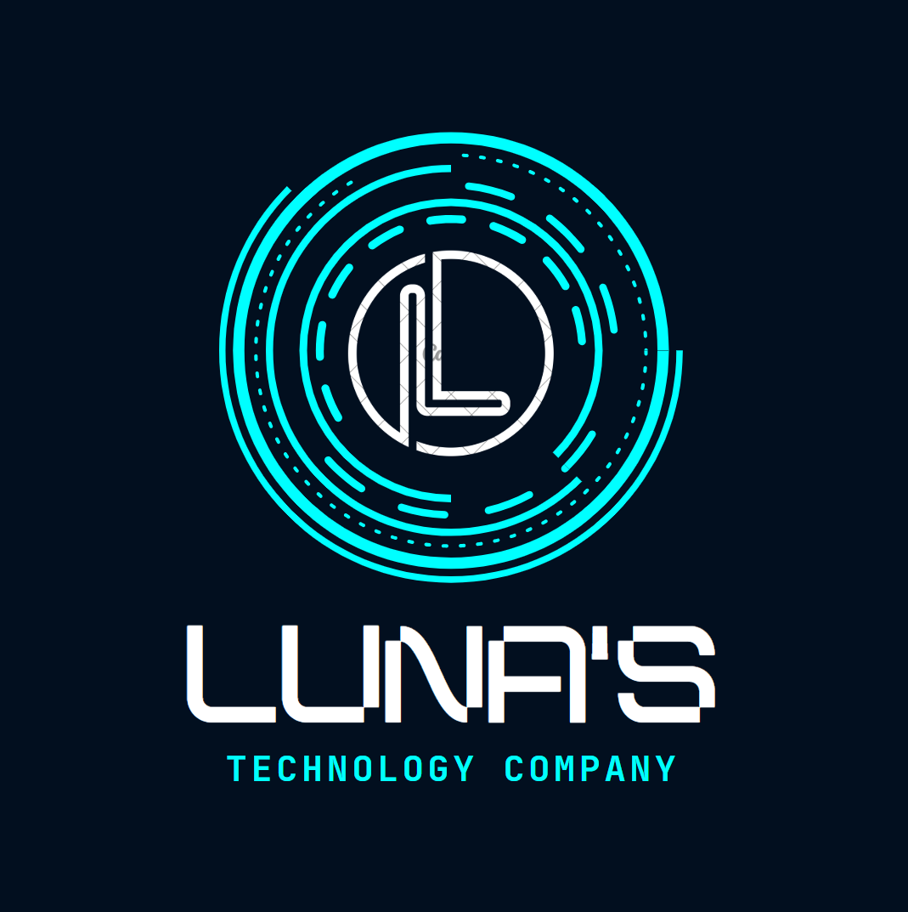

Seja Bem-Vindo!
Nossa história
A Luna's Technolgy nasceu em 2017, criada por Clara, Lucas e Rafael, que queria superar as desigualdades no acesso à educação. Lançada com 10 cursos, rapidamente conquistou milhares de usuários e superou desafios técnicos e financeiros. Após participar de um programa de aceleração em 2019, expandiu-se globalmente, tornando-se uma referência em educação online.
O que fazemos?
Luna's Technolgy é uma plataforma educacional que fornece recursos para estudantes e professores, incluindo videoaulas, simulados interativos e fóruns de discussão. Hoje, conecta milhões de alunos e professores, transformando vidas com seu lema: “Aprender sem fronteiras”
Vantagens
- Acesso Global: Uma plataforma permite que alunos e professores de diferentes partes do mundo se conectem, eliminando barreiras geográficas e proporcionando educação de qualidade a todos.
- Diversidade de Recursos: Oferece videoaulas, simulados interativos, fóruns e ferramentas de análise de desempenho, atendendo a diferentes estilos de aprendizagem
- Educação Personalizada: Com algoritmos inteligentes, o Luna's Technolgy adapta conteúdos e recomendações com base no progresso e necessidades individuais dos alunos
- Inclusão e Impacto Social: Promover educação acessível para comunidades carentes, capacitar professores e incentivar a aprendizagem contínua, contribuindo para a transformação social.